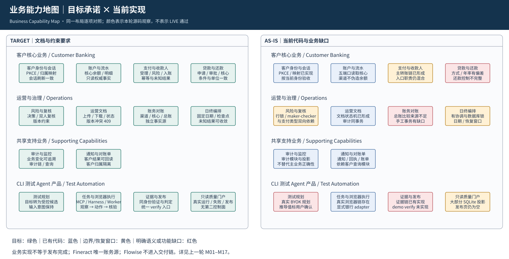
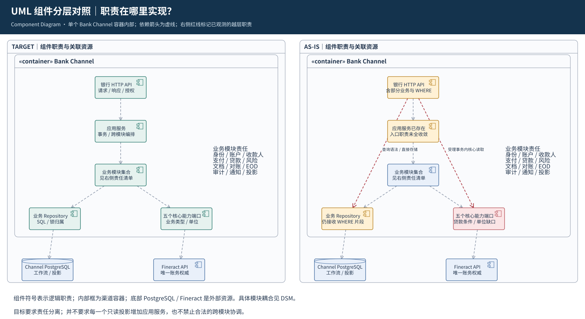
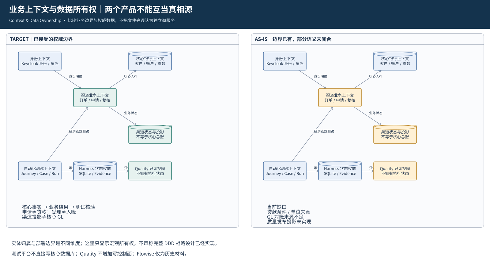
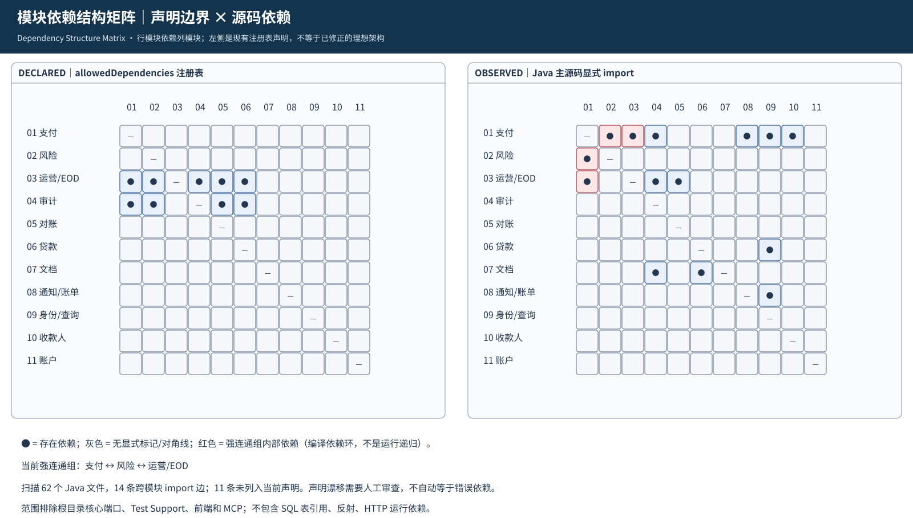

业务能力地图｜目标承诺 × 当前实现
Business Capability Map · 同一布局逐项对照；颜色表示本轮源码观察，不表示 LIVE 通过

UML 组件分层对照｜职责在哪里实现？
Component Diagram · 单个 Bank Channel 容器内部；依赖箭头为虚线；右侧红线标记已观测的越层职责

业务上下文与数据所有权｜两个产品不能互当真相源
Context & Data Ownership · 比较业务边界与权威数据，不把文件夹误认为独立微服务

模块依赖结构矩阵｜声明边界 × 源码依赖
Dependency Structure Matrix · 行模块依赖列模块；左侧是现有注册表声明，不等于已修正的理想架构
